05 实战案例
Codex × Obsidian：在知识库中自动生成配图
Obsidian 是本地优先的知识管理工具。随着 Agent 能力的增强，Obsidian 的使用方式也在发生变化。本篇介绍如何在 Obsidian 里使用 Codex，完成日常的内容创作流程。
Obsidian 是本地优先的知识管理工具。随着 Agent 能力的增强，Obsidian 的使用方式也在发生变化。本篇介绍如何在 Obsidian 里使用 Codex，完成日常的内容创作流程。
内容创作者以前有一件很头疼的事：给文章配图。但自从 Codex 命令行可以直接调用 ChatGPT 最新的生图模型 gpt-image-2 之后，我们就可以在 Obsidian 里让 Codex 根据文章内容自动生成配图。
前提条件：
- 了解 Obsidian 的基本操作
- 熟悉 Codex 命令行的使用方式（参见本教程第二部分）
1. 在 Obsidian 里安装 Terminal 插件
首先安装 Terminal 插件，如图所示：
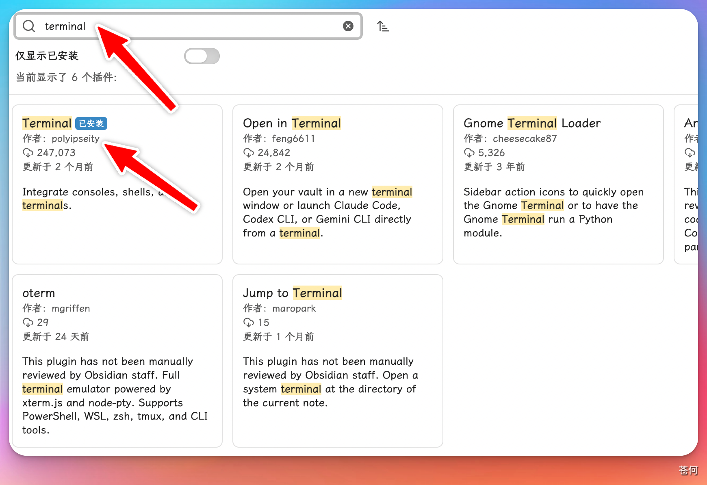
安装完成后需要进行配置，否则无法正常使用：
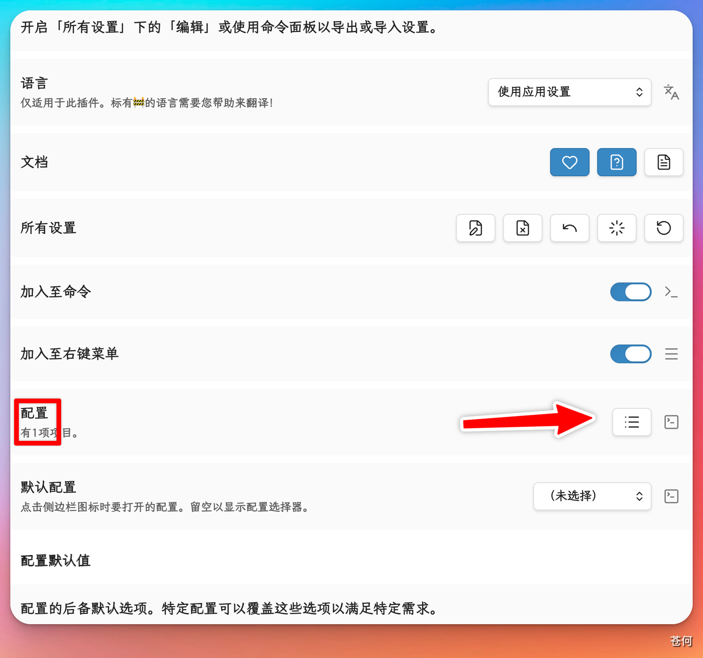
在配置中选择想要的终端输入方式：
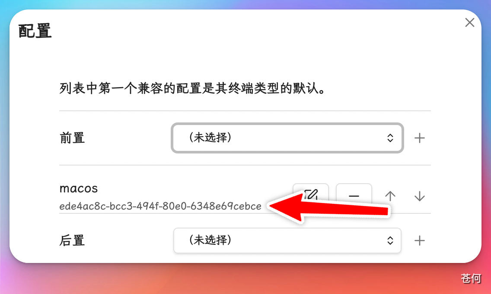
2. 打开终端
按 Cmd+P 调出命令面板，输入"终端"，选择整合式：
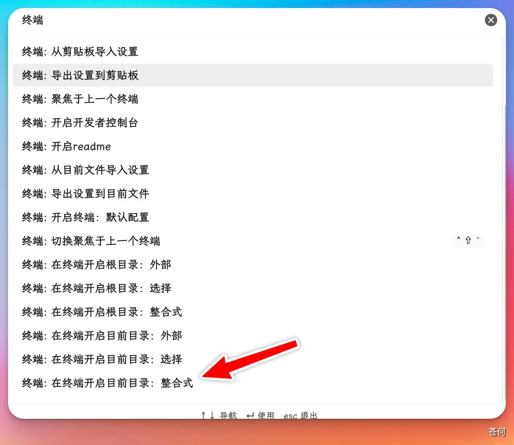
此时页面下方会出现一个命令行界面：
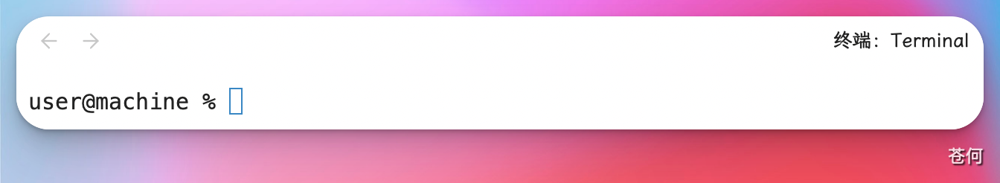
3. 登录 Codex
如果之前已经登录过 Codex，直接在这个终端里输入 codex 即可使用。如果没有登录过，参照本教程第二部分（CLI 使用 Codex）完成配置：
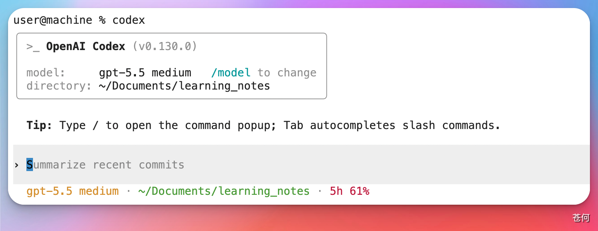
4. 开始使用
登录成功后，Codex 已经可以完整读取你本地 Obsidian 仓库里的所有内容，并执行以下操作：
- 写入文档 — 直接在仓库中新建或修改 Markdown 文件
- 生成配图 — 指定文章内容，让 Codex 根据正文自动生成配图并插入对应位置
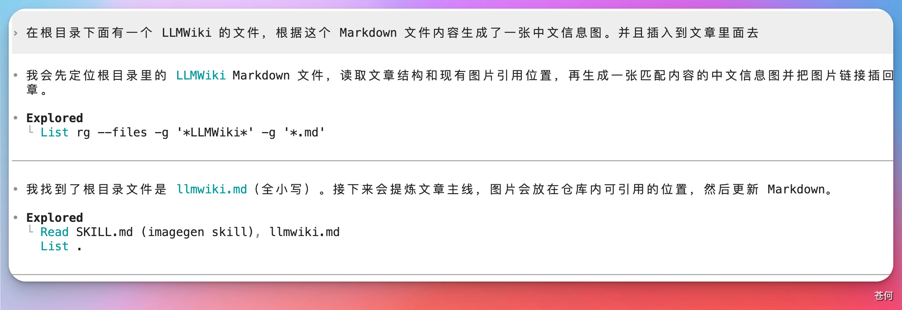
成功出图：
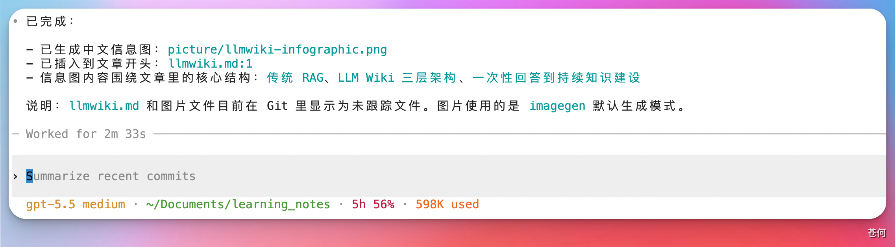
生成效果如图所示：
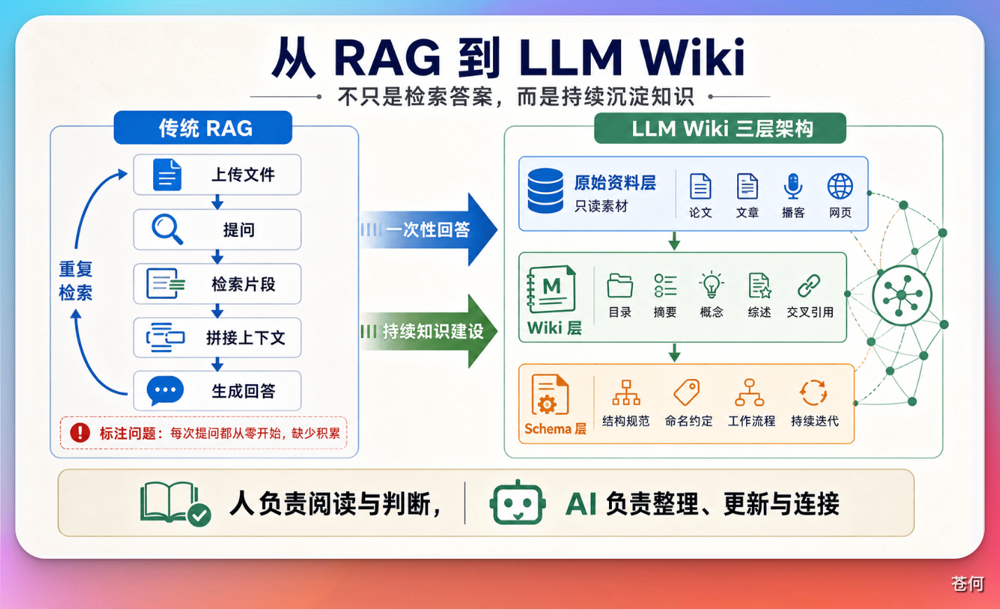
监听图床自动上传 — 如果你使用对象存储（如 PicGo），可以告诉 Codex 监听图片存储事件，识别后自动上传
如果他没有上传的话，你就可以告诉他，让他去你的本地查找你有哪些图床。他会搜索所有的图床类别，如果你想让他快点找到的话，就直接告诉他你用的是什么图床、用的是什么上传工具，这样的话他就会快速定位。
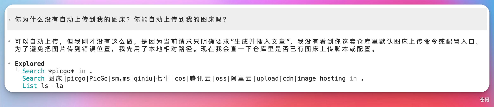
然后它会自己自动完成这个任务，最后返回给我们一个对应图床的链接。
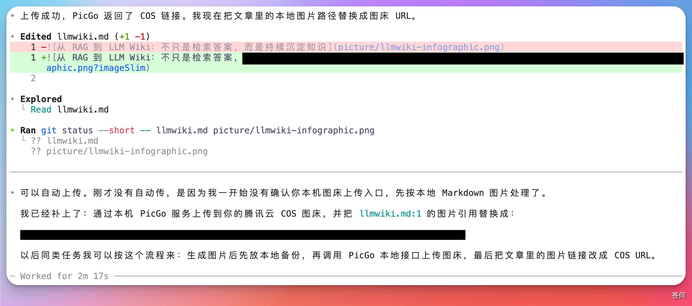
大家可以尽情尝试，把 Obsidian 变成真正由 AI 驱动的创作工作台。
参考来源
本文的操作思路参考了以下微信公众号文章，感谢原作者的分享：
- 📝 在 Obsidian 中使用 Codex 完成内容创作
来源：微信公众号
链接：https://mp.weixin.qq.com/s/f5HWooI1a8pnSObJ9rSqMw
本文截图均为作者本人实际操作所得，文字内容在参考基础上进行了重新整理与二次创作。如有侵权，请联系删除。